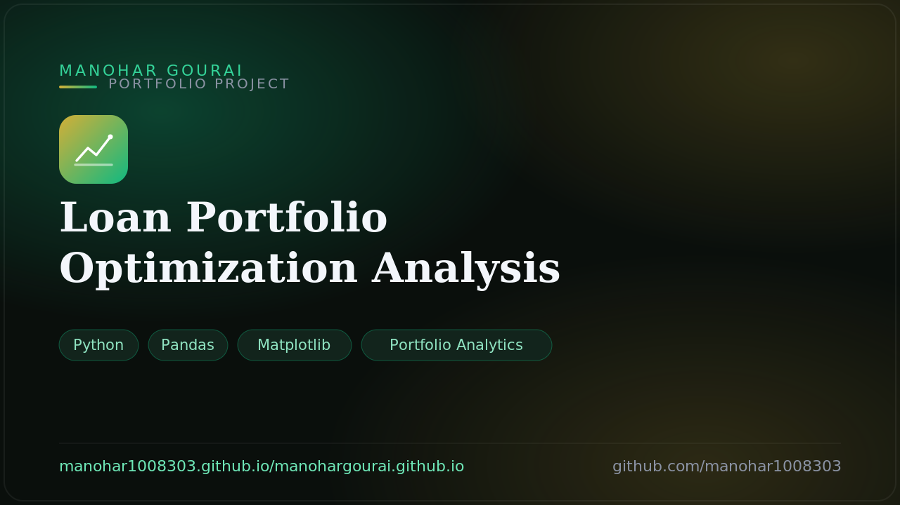

A data analysis of an optimized leveraged-loan portfolio — allocation and industry exposure, risk versus return, and key credit metrics: a 3.92% expected return at a 3.27% average default probability with a portfolio WARF of 3050 across a diversified book.
